如果某个数字的各个数位上的数字之和不是9的倍数，会怎么样呢？例如，我们考虑数字3 457的情况，它的各个数位上的数字之和是19。按照上述步骤，我们可以把3 457写成3×999 + 4 ×99 + 5×9 +7 + 12的形式。由此可以看出，3 457比9的某个倍数多出7 + 12 = 19。由于19 = 18 + 1，这说明3 457比9的某个倍数仅大1。把19的各个数位上的数字相加，和是10，再将10的各个数位上的数字相加，和是1。我把这个过程表示为：
3 457→19→10→1
将一个数字各个数位上的数相加并不断重复该步骤，直至得到一个一位数，这就是所谓的“弃九法”（casting out nines），因为每次相加之后都会减去一个9的倍数。该过程最后得到的那个一位数叫作原始数字的“数根”（digital roots）。例如，3 457的数根是1，3 456的数根是9。简言之，对于任意正数n：
如果n的数根是9，n就是9的倍数。否则，n的数根就是n被9除之后得到的余数。
用代数形式来表示，即如果n有数根r，那么：
n = 9x + r
其中x是整数。弃九法有一个非常有趣的应用，可以用来检验加、减和乘法运算的得数是否正确。例如，如果某个加法运算是正确的，答案的数根就必然与两个加数的数根之和一致。举一个例子，下面是一道加法题：
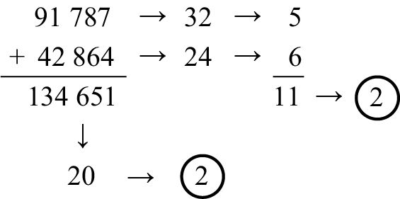
请注意，两个加数的数根分别是5和6，它们的和是11，11的数根是2。不出所料，这道题的答案134 651的数根也是2。其中的道理可以用下面这个代数式表示：
(9x + r1) + (9y + r2) = 9 (x + y) + (r1 + r2)
如果数根不一致，就说明肯定有哪个地方出错了。切记，即使数根一致，也未必表示你的计算没有错误。但是，这个方法可以帮助你发现大约90%的随机错误。注意，如果你一不小心导致两个数位彼此错位，而数字没有出错，这种检验方法就不管用了，因为在数字正确、数位错位的情况下，数根不会发生变化。不过，如果只有一个数位出错，弃九法就可以找出这个错误，除非这个错误是把0当成了9，或者把9当成了0。在多数相加时，该方法同样有效。例如，假设你买了一堆东西，价格如下：
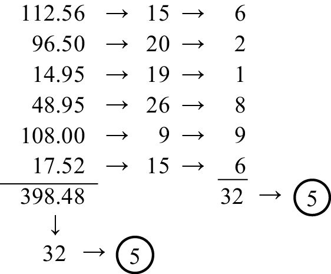
把答案的各个数位上的数字相加，发现数根是5。所有加数的数根之和是32，32的数根是5，所以两者是一致的。弃九法对减法同样有效。例如，把我们在前面做的加法题改成减法题：
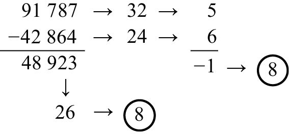
答案48 923的数根是8。把减数和被减数的数根相减，得到5 – 6 = –1。由于–1 + 9 = 8，而且在答案的基础上加（或减）9的倍数都不会改变它的数根，因此我们说这两个数根是一致的。同理，如果减数和被减数的数根之差是0，答案的数根是9时，两者也是一致的。
我们可以利用学到的这些知识，设计一个新的魔术（仿照本书引言中介绍的那个魔术）。请按以下步骤操作，可以使用计算器。
第一步：选择一个任意的两位数或者三位数。
第二步：把各个数位上的数字相加。
第三步：用最初的数字减去第二步得出的和。
第四步：将差的各个数位上的数字相加。
第五步：如果和是偶数，就乘以5。
第六步：如果和是奇数，就乘以10。
第七步：减去15。
你得到的那个数字是75吧？
举个例子。假设你一开始时选择的数字是47，4 + 7 = 11，然后47 –11 = 36，之后3 + 6 = 9。由于9是奇数，乘以10后得到90，90 – 15 = 75。再比如，假设你选择了一个三位数：831。8 + 3 + 1 = 12，831 – 12 = 819，8 + 1 + 9 = 18。由于18是偶数，18×5 = 90，再减去15，得到75。
这个魔术的原理如下。假设你最初选择的那个数字的各个数位上的数字之和是T，那么这个数必然比9的某个倍数多出T。从最初选择的那个数字中减去T，差必然小于999，而且是9的倍数，因此这个差的各个数位上的数字之和是9或18。（例如，如果你一开始时选择的数字是47，各个数位上的数字之和是11。从47中减去11，差为36，它的各个数位上的数字之和是9。）接下来，我们必然与上述各例一样，先得到90（要么是9×10，要么是18×5），再减去15后得到75。
弃九法对乘法同样有效。把上道题中的两个数字相乘，看看会怎么样。
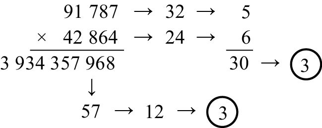
运用第2章介绍的FOIL法则，可以解释弃九法适用于乘法的原因。例如，上例右侧的数根告诉我们，相乘的两个数可以写成9x + 5和9y + 6的形式，其中x、y是整数。
(9x + 5) (9y + 6) = 81xy + 54x + 45y + 30
= 9 (9xy + 6x + 5y) + 30
= 9的倍数 + (27 + 3)
=9的倍数+ 3
尽管除法没有用弃九法检验答案正确与否的惯例，但是我忍不住想向大家介绍一种神奇的方法，来解决除数是9的除法问题。有人把这种方法称作“吠陀法”（Vedic）。我们来看下面这道题：
12 302 ÷ 9
先把它写成这种形式：
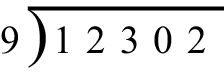
接下来，把首位数放到横线之上，在最后一位数上方写一个字母R（表示余数）。
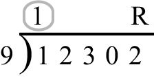
之后，将下式中被圈住的两个数字相加，即1+2=3。因此，我们在商的第二位处写上3。
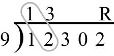
然后是3 + 3 = 6。
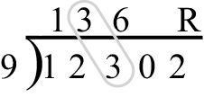
再然后是6 + 0 = 6。
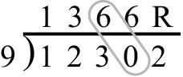
最后，我们算出余数为6 + 2 = 8。
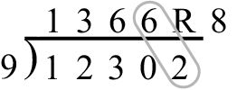
也就是说，12 302 ÷ 9 = 1 366，余数是8。这个办法真是太简单了！下面再举一例，但我会省去某些细节。
31 415 ÷ 9
答案唾手可得！
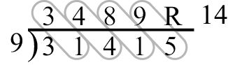
首位数是3，然后3 + 1 = 4，4 + 4 = 8，8 + 1 = 9，最后9 + 5 = 14。因此，商是3 489，余数为14。由于14 = 9 + 5，所以我们在商上加1，变成3 490，余数是5。
下面这道题非常简单，但是答案非常优美。验算工作由大家自行完成（笔算或者心算都可以）。
111 111÷9 = 12 345 R 6
我们发现，当余数是9或者更大时，我们只需在商上加1，然后从余数中减去9。在进行除法运算的过程中，我们有时也会遇到两位相加之和超过9的问题。在这种情况下，我们可以做一个进位标记，并从两数之和中减去9，然后继续完成后面的步骤。例如，算一下4 821÷9这道题。
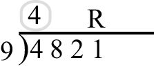
第一步在横线上方写上4。由于4 + 8 = 12，因此我们在4的上方写一个1（表示进位），然后从12中减去9，把得数3写在商的第二位上。之后，我们算出3 + 2 = 5，5 + 1 = 6。因此，这道题的答案是535，余数是6。如下图所示：
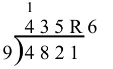
再举一个多次进位的例子，请计算98 765÷9。
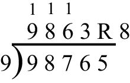
在商的首位处写上9，然后计算9 + 8 = 17，写下进位标记1并减去9后，商的第二位是8。接下来，8 + 7 = 15，做好进位标记后在商的第三位处写上6（15 – 9）。6 + 6 = 12，做好进位标记后在商的第四位处写上3（12 – 9）。最后，算出余数为3 + 5 = 8。算上所有的进位，最后的答案是：商为10 973，余数为8。
如果你觉得除数是9的除法运算太简单了，那就试试除数是91的除法运算。任意给你一个两位数，你不需要纸和笔，就能很快算出它被91除的商，精确到小数点后多少位都可以，这绝对不是开玩笑！例如：
53÷91 = 0.582 417…
具体来说，答案应该是
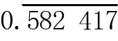
，数字582 417上方的横线表示这几位数字将不断循环。这些数字是怎么得来的？其实很简单，答案的前半部分相当于这个两位数与11的乘积。利用在第1章学到的方法，我们知道53×11 = 583，再从这个数字中减去1，就得到了582。后半部分是从999中减去前半部分的差，即999 – 582 = 417。由此，我们得到了答案。再举一例，尝试计算78÷91。由于78×11 = 858，因此答案的前半部分是857。999 – 857 = 142，因此78÷91 =
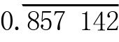
。我们在第1章见过这个数字，因为78 / 91可以化简成6 / 7。这个方法之所以有效，是因为91×11 = 1 001。因此，在第一个例子中，
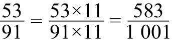
，而1 / 1 001 =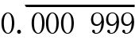
，因此答案中小数点后的循环部分是583×999 = 583 000 – 583 = 582 417。由于91 = 13×7，因此在做除数是13的除法运算时，我们可以通过化繁法，把它变成分母是91的分数。1 / 13 = 7 / 91，7×11 = 077，因此：
1 / 13 = 7 / 91 =
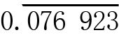
同理，2 / 13 = 14 / 91 =
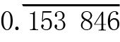
，因为14×11 = 154。